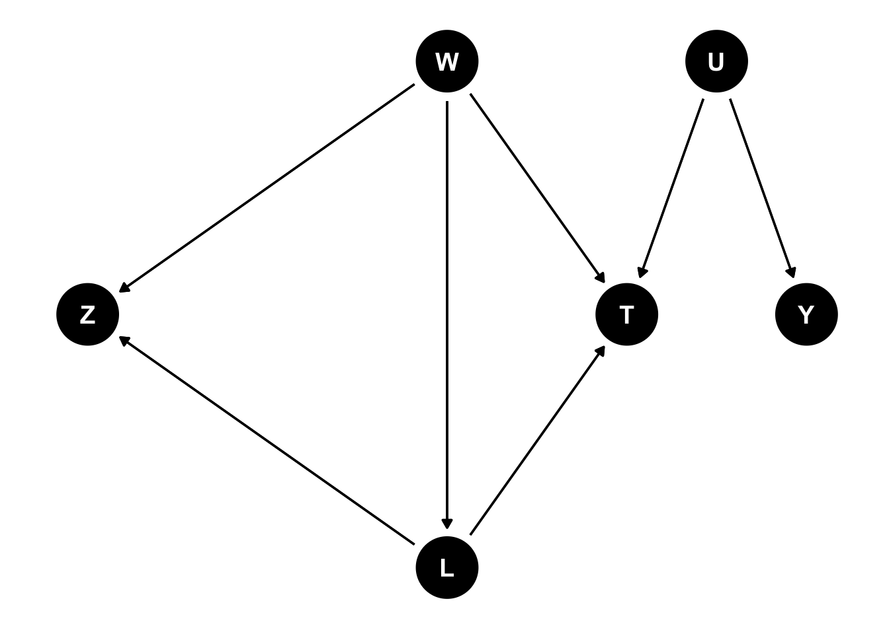

Capítulo 6 Variáveis Instrumentais
6.1 Introdução
Considere o seguinte DAG canônico de Variáveis Instrumentais:

Nós vemos que o efeito causal do tratamento \(T\) é confundido pela variável não observada \(U\), já que temos um backdoor aberto. Porém, a variável \(Z\) não tem nenhum caminho aberto para \(Y\) exceto via \(T\), isto é, \(T\) é um mediador do efeito causal de \(Z\).
Do ponto de vista não paramétrico (DAGs), dizemos que a variável \(Z\) é uma candidata a variável instrumental (IV) se:
\(Z\) está conectado a X no grafo original. Condição de relevância.
No grafo em que a seta de \(T\) para \(y\) é removida, \(Z\) é d-separado de \(Y\). Exclusion Restriction.
A variável instrumental \(Z\) não compartilha causa comum com \(y\), incluindo, portanto, não ser descendente de \(T\). Causa comum.
Remark: Pode acontecer de ser necessário controlar para uma conjunto de covariáveis \(X\) para que a segunda condição seja satisfeita. Chamamos isso de IV condicional.
Remark 2: Dizemos que uma variável \(Z\) é candidata a ser VI porque as três condições acima, ainda que necessárias, não são suficientes para uma variável ser considerada VI. Veremos mais à frente porque isso acontece e o que mais é necessário para uma variável ser considerada VI. Considere o DAG abaixo.
Remark 3: A literatura econométrica não costuma deixar muito clara a condição 3. Às vezes falam que \(Z\) deve causar \(T\) (o que implica que não há causa comum em um DAG). Porém, isso não é correto, como o DAG abaixo mostra, em que, controlando para \(V_3\), que é um collider, induzimos correlação entre \(Z\) e \(T\) para a condição de relevância ser satisfeita, e \(Z\) é uma VI candidata.
Do mesmo jeito, se \(V_3\) for causa comum de \(Z\) e \(T\), não controlar para ela torna a \(Z\) admissível como VI.

Será que \(Z\) pode ser uma IV no DAG abaixo?

Vamos verificar as condições. É fácil ver que \(Z\) está conectado a \(T\), já que temos dois caminhos abertos, um via \(W\) e outro via \(L\) (e ainda um via \(W\) via \(L\)). Portanto, a primeira condição está satisfeita. Note que se eu controlar simultaneamente para \(W\) e \(L\), então eu fecho todos os caminhos abertos.
Com relação à segunda condição, Remover a flecha de \(T\) para \(Y\) é, efetivamente, ter um novo DAG:
Por fim, \(Z\) não compartilha causa comum com \(Y\).
Nesse DAG, \(Z\) não está d-separado de \(Y\), pois existe um caminho aberto para \(Y\) via \(L\). Portanto, controlando para \(L\) (mas não \(W\)), tenho um instrumento que passa nas duas condições.
6.2 IV com modelo estrutural
\(y_i = \beta D_i + \delta_2 U + e_i\) \(D_i = \delta_1 U + \gamma z_i + u_i\)
As duas equações são estruturais, no sentido de que representam relações causais. A restrição de exclusão do tratamento \(D_i\) é que \(\mathbb{E}[D_i|e_i] = 0\). Sabemos que não é verdade porque \(D_i\) é endógeno, ou seja, há um viés de variável omitida, \(U\). Já a restrição de exclusão da variável instrumental é que \(\mathbb{E}[z_i|u_i] = 0\)
Vamos supor, para simplificar, que tanto \(D_i\) quanto \(Z_i\) são binários.
Considere o seguinte exemplo:
Nós sabemos que diferença simples de média identifica o ATE da segunda equação: \(\gamma = \frac{\sum_{i=1}^n z_i}{n} - \frac{\sum_{i=1}^n (1-z_i)}{n}\).
6.3 MQO em 2 Estágios
Considere novamente o DAG canônico para IV. Como poderíamos estimar o efeito causal de \(T\) sobre \(Y\)?
Uma possibilidade é a chamada forma reduzida, que pode ser derivada a partir da suposição de independência. Antes, vamos introduzir uma notação:
A notação \(Y^{T=t,Z=z}\) indica o resultado potencial para um nível do tratamento \(t\) efetivamente recebido, que pode ser \(0\) ou \(1\), e para um nível do treatment assignment, que pode ser \(0\) ou \(1\), para um instrumento binário.
E também temos um status potencial do tratamento (em oposição ao tratamento observado): \(T^1_i\) é o status do tratamento quando \(Z=1\). Similarmente, \(T^0_i\) é o status do tratamento quando \(Z=0\).
E aqui temos uma nova switching equation:
\(T_i = T^0_i + (T^1_i - T^0_i)Z_i\)
\[\begin{align} E\big[Y_i\mid Z_i=1\big]-E\big[Y_i\mid Z_i=0\big] & = E\big[Y_i(D_i^1,1)\mid Z_i=1\mid]- E\big[Y_i(D_i^0,0)\mid Z_i=0\big] \\ & = E[Y_i(D_i^1,1)] - E[Y_i(D_i^0,0)] \end{align}\]
O estimador é o efeito causal (total) de \(Z\) sobre \(Y\). Em um experimento, isso é chamado de intent to treat, pois se a aleatorização é o instrumento, então é o efeito causal da intenção de tratar.
library(stargazer)
n <- 100000
set.seed(123)
z <- rnorm(n)
u <- rnorm(n, 0 , 3)
treatment <- rbinom(n, 1, plogis(z - u + rnorm(n, 0, 2)))
y <- 2*treatment + u
reg_vies <- lm(y ~ treatment)
summary(reg_vies)Call: lm(formula = y ~ treatment)
Residuals: Min 1Q Median 3Q Max -11.4112 -1.6433 0.0048 1.6470 10.8586
Coefficients:
Estimate Std. Error t value Pr(>|t|)
(Intercept) 1.75964 0.01096 160.56 <2e-16
treatment -1.49476 0.01551 -96.35 <2e-16
—
Signif. codes: 0 ‘’ 0.001 ’’ 0.01 ’’ 0.05 ‘.’ 0.1 ’ ’ 1
Residual standard error: 2.453 on 99998 degrees of freedom Multiple R-squared: 0.08495, Adjusted R-squared: 0.08494 F-statistic: 9283 on 1 and 99998 DF, p-value: < 2.2e-16
reg_1s <- lm(treatment ~ z)
reg_2s <- lm(y ~ fitted(reg_1s))
stargazer(reg_vies, reg_1s, reg_2s, type = "html", title="OLS e 2SLS")| Dependent variable: | |||
| y | treatment | y | |
| (1) | (2) | (3) | |
| treatment | -1.495*** | ||
| (0.016) | |||
| z | 0.095*** | ||
| (0.002) | |||
| fitted(reg_1s) | 1.916*** | ||
| (0.085) | |||
| Constant | 1.760*** | 0.499*** | 0.058 |
| (0.011) | (0.002) | (0.043) | |
| Observations | 100,000 | 100,000 | 100,000 |
| R2 | 0.085 | 0.036 | 0.005 |
| Adjusted R2 | 0.085 | 0.036 | 0.005 |
| Residual Std. Error (df = 99998) | 2.453 | 0.491 | 2.558 |
| F Statistic (df = 1; 99998) | 9,283.268*** | 3,739.184*** | 505.426*** |
| Note: | p<0.1; p<0.05; p<0.01 | ||
Uma regra de bolso, baseada em um artigo de Stock & Yogo (2002), diz que a estatística F da regressão do primeiro estágio deve ser maior que 10.
## ── Attaching core tidyverse packages ──────────────────────── tidyverse 2.0.0 ──
## ✔ dplyr 1.1.4 ✔ readr 2.1.5
## ✔ forcats 1.0.0 ✔ stringr 1.5.1
## ✔ ggplot2 3.5.1 ✔ tibble 3.2.1
## ✔ lubridate 1.9.3 ✔ tidyr 1.3.1
## ✔ purrr 1.0.4
## ── Conflicts ────────────────────────────────────────── tidyverse_conflicts() ──
## ✖ dplyr::filter() masks stats::filter()
## ✖ dplyr::lag() masks stats::lag()
## ℹ Use the conflicted package (<http://conflicted.r-lib.org/>) to force all conflicts to become errorslibrary(ggplot2)
simulate_and_fit <- function(n) {
z <- rnorm(n)
u <- rnorm(n, 0, 3)
treatment <- rbinom(n, 1, plogis(z - u + rnorm(n, 0, 2)))
y <- 2 * treatment + u
# Naive regression
reg_vies <- lm(y ~ treatment)
# 2SLS
reg_1s <- lm(treatment ~ z)
predicted_treatment <- predict(reg_1s)
reg_2s <- lm(y ~ predicted_treatment)
# Return coefficients
tibble(
naive_coef = coef(reg_vies)[2],
tsls_coef = coef(reg_2s)[2]
)
}
# Sample sizes to simulate
sample_sizes <- seq(1000, 100000, by = 1000)
# Use map to apply the function to each sample size
results <- tibble(sample_size = sample_sizes) %>%
mutate(
simulation_results = map(sample_size, simulate_and_fit)
) %>%
unnest(cols = c(simulation_results))
results %>%
pivot_longer(cols = c(naive_coef, tsls_coef), names_to = "method", values_to = "coefficient") %>%
ggplot(aes(x = sample_size, y = coefficient, color = method)) +
geom_line() +
geom_smooth(data = . %>% filter(method == "2sls_coef"), method = "lm", se = FALSE, color = "red") +
labs(
title = "Convergence of Regression Coefficients with Increasing Sample Size",
x = "Sample Size",
y = "Estimated Coefficient",
color = "Method"
) +
theme_minimal() +
scale_color_manual(values = c("naive_coef" = "blue", "tsls_coef" = "red")) +
theme(
plot.title = element_text(hjust = 0.5),
legend.title = element_blank()
)6.4 Principais usos de IV
6.4.1 Experimentos
Quando pesquisadores utilizam o processo de assignment como instrumento para lidar com problema de non-compliance. Estimativas do Local Average Treatment Effect são críveis. Contraposição a intent-to-treat estimates.
6.4.2 Regras com variação quasi-aleatória
Kin (2019) utiliza uma regra na Suécia que obriga cidades com poplução acima de certo nível a adotar democracia direta. Dinas (2014) utiliza idade para votar no momento da eleição como instrumento para comparecimento eleitoral do eleitor.
6.4.3 Teoria
Quando a restrição de exclusão é baseada em teoria ou conhecimento substantivo. Aqui estão os instrumentos baseados em geografia ou clima (por exemplo, proximidade a faculdade como instrumento para ensino superior) ou (Zhu, 2017) que usou proximidade geográfica de cinco centros comerciais fora da China (ponderados pelo PIB dos centros comerciais) como instrumento para presença de multinacional (que causaria corrupção). Há o clássico instrumento de chuva como instrumento para, por exemplo, comparecimento eleitoral de eleitores democratas.
Mellon (2023) revisou 289 estudos e concluiu que 195 variáveis distintas foram conectadas com chuva, o que significa que podem ser potenciais violações da restrição de exclusão.
Cinelli and Hazlett
Freidman et. al (2000) usaram origem legal (francesa, inglesa, sueca etc.) como instrumento para qualidade das instituições. Djankov et al. (2003) usaram origem legal como instrumento para grau de formalismo de instituições.
Glaeser et al. (2004) usaram origem legal como instrumento para restrições ao executivo (“executive constraints”).
Henderson and Brooks, 2016, usam chuva ao redor do dia da eleição como instrumento para votação de candidatos democratas, e concluem que aumento da chuva reduz comparecimento que causa democratas terem comportamento legislativo mais direitoso.
##Efeito heterogêneo
Se houver efeito heretogêneo (apenas mulheres mudam comportamento em razão do instrumento, por exemplo), então estamos estimando o efeito apenas para aquele subgrupo (são os compliers com o instrumento).
Se o instrumento explicar pouco da variação no Tratamento, então teremos pouca variação no tratamento para explicar a variação em Y. Ou seja, o sinal é fraco. Isso se traduz em baixo poder estatístico.
Para discutir efeito casual heterogêneo, vamos utilizar um estudo em ciência política (White, 2019). Qual o efeito de misdemeanor (algo como contravenção penal) sobre comparecimento eleitoral? O aturo argumenta que o efeito deve variar por raça (maior para negros que brancos), de modo que o efeito causla é heterogêneo. Segundo o autor, casos são atribuídos aleatoriamente para diferentes cortes judiciais, e elas variam em sua leniência (ou severidade). Aqui, o tratamento é a condenação (\(1\) se condenado, \(0\) se não), e temos uma variável instrumental, o sorteio do juiz mais ou menos leniente.
Alguns acusados têm tantas evidências que serão condenados não importa para que tipo de corte são enviados. Outros, podem sersempre absolvidos, não importa o juiz. Há os !azarados”, que só serão condenados se enviados para a corte severa. O que não faz sentido é ter alguém que só é condenado se enviado para um juiz leniente e absolvido se enviado para um severo. Nós iremos agrupar esses quatro tipos (incluindo o último) em quatro tipos:
Os primeiros são chamado de always-takers. Sempre recebem o tratamento (são presos), não importa o que foi atribuído a eles pelo mecanismo de atribuição. O segundo são os never takers, que nunca recebem o tratamento. Por fim, o terceiro grupo são os compliers, que seguem o tratamernto prescrito e o quarto grupo são os defiers, aqueles que fazem o contrário do prescrito. Nesse caso, não faz muito sentido imaginar que existem os defiers, mas teoricamente é possível.
Digmos que o efeito causal do tratamento é heterogêneo, isto é, \(\delta_i = Y^1_i - Y^0_i\).
Nesse caso, não podemos mais estimar o efeito causal geral (ATE), pois o efeito causla é heterogêneo e o instrumento só explica a variação no tratamento para os compliers.
6.4.4 Suposições para estimar o LATE
Além das suposições que já discutimos, vale sempre lembrar que temos também a SUTVA.
Resultados potenciais para unidade \(i\) não estão relacionadas ao tratamento que \(j\) recebe. Claramente existe potencial para SUTVA ser violada no estudo de encarceramento e voto. Se dois irmãos (indivíduo \(i\) e \(j\)) são acusados e um deles é preso, é possível que o tratamento de um deles impacte a probabilidade de voto do outro e vice-versa. Salvo engano, White não discute essa possibilidade de violação da suposição, o que é problemático. Mas vamos supor que SUTVA está garantido.
- Vale lembrar também que Independência é diferetne da restrição de exclusão
Também chamada de as good as random assignment e no confounding for the effect of Z on Y. Afirma que a IV é independente dos resultados potenciais e das potenciais atribuições de tratamento. Em termos de nosso DAG, quer dizer que \(Z\) não compartilha causa comum com \(Y\).
Essa suposição parece tranquilamente satisfeita no estudo em questão, já que a atribuição da corte é aleatória e parece difícil imaginar que algo que causa a leniência da corte ser causado por alguma variável que também causa o comparecimento. Aqui o DAG:
6.6 Monoticidade
Por fim, precisamos assumir monoticidade. Ela requer que a variável instrumental opera (fracamente) em todas as direções para todos os indivíduos. Ou seja, todo mundo que é afetado pelo instrumento é afetado da mesma maneira. Em outras palavras, o instrumento apenas move as pessoas do controle para o tratamento (ou não move a pessoa), mas nunca o contrário. Ou seja, estamos assumindo que não há defiers na nossa população.
Matematicamente e de maneira geral, dizemos que a monoticidade é válida quando \(T^{Z=1} >= T^{Z=0}\) para todas as unidades.
Com essas suposições, nós estiamos o LATE: Local Average Treatment Effect of T on Y. Isso porque nosso estimador é:
\[\begin{align} \mathbb{E}[Y(Z=1) - Y(Z=0)] = \\ =& \mathbb{E}[Y(Z=1) - Y_i(Z=0)|T^1 = 1, T^0 = 1]P(T^1 = 1, T^0 = 1) \text{ always-takers} \\ +& \mathbb{E}[Y(Z=1) - Y_i(Z=0)|T^1 = 0, T^0 = 0]P(T^1 = 0, T^0 = 0) \text{ never-takers} \\ +& \mathbb{E}[Y(Z=1) - Y_i(Z=0)|T^1 = 1, T^0 = 0]P(T^1 = 1, T^0 = 0) \text{ compliers} \\ +& \mathbb{E}[Y(Z=1) - Y_i(Z=0)|T^1 = 0, T^0 = 1]P(T^1 = 0, T^0 = 1) \text{ defiers} \end{align}\]
Porém, sabemos que o instrumento não tem efeito causal sobre always-takers nem never-takers, então o efeito causal é zero para esses grupos. E a proporção de defiers é zero, de modo que ficamos apenas com a parte dos compliers. E nesse grupo, \(Z = T\), de modo que o efeito do instrumento é o efeito do tratamento. Então podemos reescrever como:
\[\delta_{IV,LATE} = \mathbb{E}[Y(1) - Y^0)|T^1 - T^0 = 1]\]
Vejam que o denominador nos dá a proporção da população que mudou seu status por causa do instrumento.
6.7 Estimação (aka estatística F)
Considere nosso modelo em que as variáveis estão centradas (sem constante) e não há controle.
\(y_i = \beta D_i + e_i\) \(D_i = \pi z_i + u_i\)
Posso reescrever a equação de resultado como:
\(y_i = \beta (\pi z_i + u_i) + e_i = \underbrace{\beta \pi}_{\delta} z_i + \beta u_i + e_i\) Essa equação é chamada de forma reduzida.
Lembrando que nosso estimador \(\hat{\beta}_{2sls} = \frac{\hat{\delta}}{\hat{\pi}}\)
Ou seja, o estimador de 2sls é a razão da forma reduzida e o primeiro estágio
O que acontece se \(Cov(D_i, z_i)\) for muito pequeno? Pequenas variações podem impactar bastante as estimativas.
É possível mostrar (supondo homocedasticidade) como o viés do nosso estimaodr em dois estágio se releciona com a estatística F:
\[ \mathbb{E}[\hat{\beta_{2sls}} - \beta] \approx \underbrace{\frac{Cov(u,e)}{Var(u)}}_{\text{OVB}} \frac{k}{F + 1} \]
Se a estatística F é zero, ou seja, o poder do teste é zero, então o viés é igual ao de MQO normal, ou seja, a estimativa com IV é a mesma de OLS/MQO.
Quanto maior a estatística F, menor o viés. E por fim, quanto maior o número de instrumentos (isso não está explícito, mas entra na fórmula), maior o viés em amostras finitas.
É por essa razão que a literatura se concentrou em uma heurística para a estatística F, que vimos é ser maior que 10. Que basicamente é dizer que será no máximo 10% do viés com 95% de certeza.
6.7.1 F stat
A estatística F do primeiro estágio é a parcela explicada no primeiro estágio, relativo ao ruído no primeiro estágio. Quanto maior a estatística F, menor o viés.
Se o poder é zero, \(F = 0\) e IV é apenas a estimativa de MQO.
Ponto chave: quando existem muitos instrumentos, o viés aumenta.
This is the approach initially developed by Staiger and Stock (1997) and Stock and Yogo (2005). - Typical rule of thumb: first-stage F-statistic above 10 means that bias won’t be larger than 10% with size of 5%. Very popular! - Suposição chave: homecedasticidade!
Montiel Olea and Pfluger( 2013) desenvolveram um teste robusto a heterocedasticidade, com uma estatística F mais apropriada a (allows for clustering, autocorrelation, etc.) - O novo ponto de corte é mais como 23.1
O patoce ivDiag computa essa estatística F. Função eff_F.
Alternativa é computar um invervalo de confiança de Anderson-Rubin, que é válido mesmo com instrumento fraco. Novamente, ivDiag computa esse IC.
6.8 Referências
Henderson, J., & Brooks, J. (2016). Mediating the electoral connection: The information effects of voter signals on legislative behavior. The Journal of Politics, 78(3), 653-669.
Mellon, J. (2023). Rain, Rain, Go Away: 195 Potential Exclusion-Restriction Violations for Studies Using Weather as an Instrumental Variable. Available at SSRN 3715610.
White, A. (2019). Misdemeanor disenfranchisement? The demobilizing effects of brief jail spells on potential voters. American Political Science Review, 113(2), 311-324.